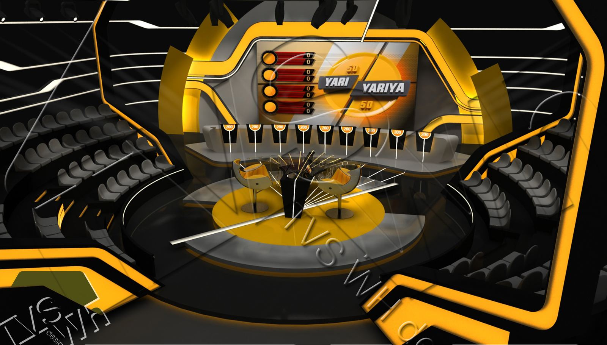
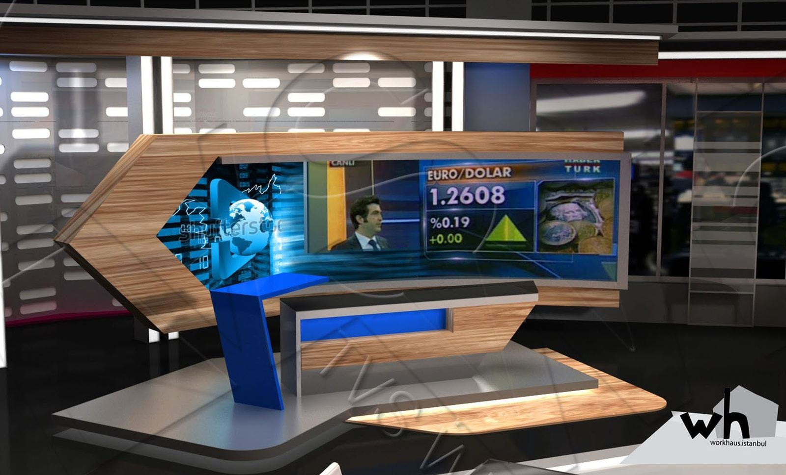
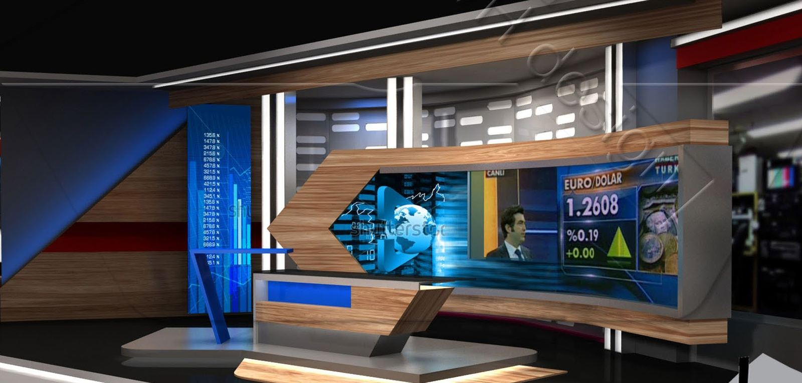
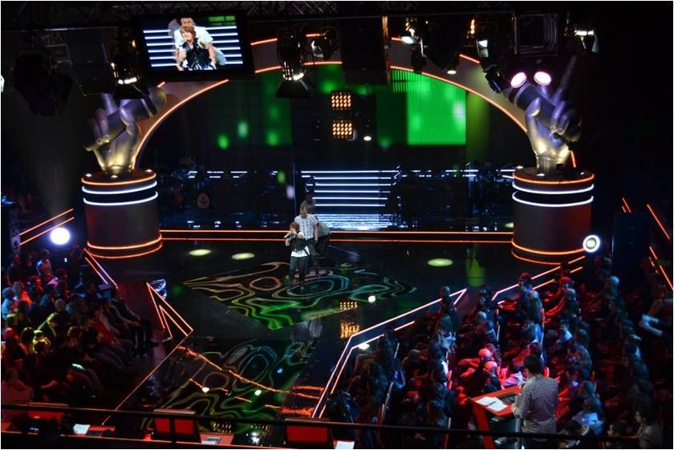

Lingo
TRT 1 · Kağıthane Stüdyoları

Stüdyo, kamera, reji, ses, ışık, LED ve dekor: bir televizyon programının ihtiyaç duyduğu her şey, ilk çizimden canlı yayına kadar tek ekipte. Kağıthane'den Doha'ya, Trablus'tan Duhok'a, Moskova'dan Fransa'ya.
Bu sezon
Stüdyolarımızda çekilen ve ekibimizin yayına hazırladığı, ekranda devam eden programlar.
TRT 1 · Kağıthane Stüdyoları

NOW · Kağıthane Stüdyoları
Libya
İki iş kolu
Bir programın dekorunu tasarlayan ekip, o dekoru kuran, ışığını yakan ve yayına çıkaran ekiple aynı. Arada başka firma yok, sorumluluk tek yerde.

TVS Prodüksiyon / TVS Stüdyoları
Kağıthane stüdyomuzda ya da sizin mekânınızda; kamera, reji ve ışıkla eksiksiz prodüksiyon.

TVS WorkHouse
Haber, spor, yarışma ve eğlence programları için konsept, 3D tasarım, imalat ve uygulama. Müze ve mekân projeleri.
Köklerimiz
Film setlerinden yayın stüdyolarına, otuz yılı aşkın bir birikim.
Film prodüksiyon hizmetleriyle sektöre giriş.
ATA Film Stüdyoları: İstanbul'da 6.500 m² alanda, ses ve akustik yalıtımlı 5 plato. Projelendirdik ve inşa ettik.
TEM Stüdyoları, ATA Film Stüdyoları bünyesine katıldı.
TVS Prodüksiyon kuruldu.
Moskova: beIN Sports Dünya Kupası stüdyoları.
Katar: Dünya Kupası yayın ve stadyum dekorları.
Kağıthane stüdyolarında Lingo ve Kumbara; Al Jazeera ve ATV'de süren işler.


Sınır ötesi işler
Körfez'den Kuzey Afrika'ya, Avrupa'dan Amerika'ya; yayın kuruluşları ve devlet kurumları için anahtar teslim işler.
Kanal stüdyolarında dekor tasarımı ve uygulaması, LED ekranlar, renovasyon.
2018 FIFA Dünya Kupası için Moskova'da beIN yayın stüdyosu dekorları.
2022 FIFA Dünya Kupası: yayın dekorları, stadyum dekorları ve etkinlik uygulamaları.

Proje ve inşaat: boş araziden yayına, ses ve akustik yalıtımlı platolarıyla bir medya kompleksi. Bünyesinde 2 ulusal televizyon kanalı, 1 radyo ve 1 gazete.
Havalimanı açılış organizasyonu.
Müze tasarımı ve uygulaması.
Havalimanı LED ekranları ve ışıklandırma.
17 Şubat ve 23 Ekim Kurtuluş Günü etkinlikleri, Rixos organizasyonları, çok sayıda kongre, açılış ve lansman.
Kanal stüdyo dekorları.
Yayın stüdyosu dekor tasarımı.
Proje bilgileri ve görseller eklenecek.
Yeni stüdyoların tüm LED ekranları TVS tarafından sağlandı; teknik destek devam ediyor.
Spor haber stüdyosu dekoru ve LED ekranlar.
Kanal stüdyo dekorları.
Tasarım stüdyomuz
Kağıthane'deki tasarım ekibimiz haber, spor, yarışma ve eğlence programları, ödül törenleri, müzeler ve etkinlikler için sahne ve dekor tasarlıyor. Tasarım ile uygulama aynı çatı altında olduğu için çizilen her dekor gerçekten kurulabilir, bütçesi baştan bellidir.
Programın formatı, kamera açıları ve marka kimliğinden yola çıkan ilk fikir.
3ds Max ile fotogerçekçi görseller; yayın öncesi stüdyoyu ekranda görürsünüz.
AutoCAD çizimleri, LED ve ışık yerleşimi, malzeme ve maliyet listesi.
Atölyede üretim, sahada montaj, ışık ve LED entegrasyonu, yayına hazır teslim.
TVS WorkHouse tasarımları
Türkiye'nin ana kanalları için tasarladığımız ve kurduğumuz stüdyolardan bir seçki.








Birlikte çalıştıklarımız
Yıllar içinde ekranlarına stüdyo kurduğumuz, sahnesini tasarladığımız ve yayınına ortak olduğumuz kurumlar.
TVS Group
Medyanın dışındaki işlerimiz kendi markalarıyla yürüyor.
Anahtar teslim inşaat ve proje geliştirme, İstanbul.
smartyapim.com → Denizcilik · TekneFethiye'den tekne turları ve yat kiralama.
sailamor.com →Yayın teknolojisi danışmanlığı ve sistem entegrasyonu. Yurt dışında teknoloji tabanlı projeler: su sayaçlarının otomatik okunması, ATM cihazlarının otomasyonu ve benzeri uygulamalar.
Stüdyo ve ofis
Yeni bir program, stüdyo yenileme, etkinlik ya da yurt dışı projesi: ilk görüşmede ihtiyacı birlikte çıkarıp size tasarım ve bütçe önerisiyle döneriz.